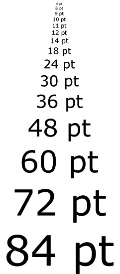

Het corps is de hoogtemaat van een letter, gemeten van de bovenkant van de hoogste letter tot de onderkant van de laagste. Het corps wordt uitgedrukt in eenheden van het typografische maatsysteem.
De x-hoogte is de hoogte van een onderkast-x en bepaalt de visuele grootte van een letter. Lettertypen van dezelfde grootte kunnen groter of kleiner lijker

computerhope.com